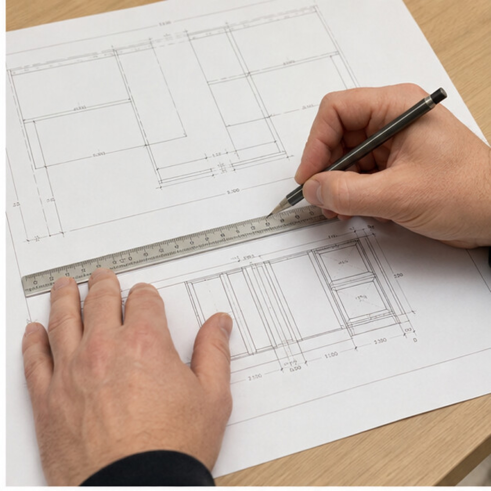

Tell us what the room needs to change.
We begin with the home, routines, references, frustrations, project scope, and the result the kitchen should create.
How It Works
Mariani develops the layout, cabinetry, materials, and scope, then connects production, site work, installation, and final adjustment around the approved design.
Discuss your kitchen
The process gives you clear decisions and clear responsibility. You see what is being approved, what happens next, and who is carrying it before work moves forward.
We begin with the home, routines, references, frustrations, project scope, and the result the kitchen should create.
Layout, elevations, cabinetry interiors, openings, materials, appliances, lighting, and connected work become one coordinated plan before production.
Custom production, site preparation, delivery, installation, adjustment, and surrounding renovation remain connected to the approved room direction.
The project-specific plan should explain delivery, site preparation, access, work sequence, and the periods when the kitchen or adjoining rooms cannot be used. Mariani does not replace that explanation with one universal timeline.
If a site condition or requested change affects scope, price, responsibility, or sequence, the effect should be recorded and discussed before the changed work proceeds.
Final fit and adjustment, care information, open items, correction responsibility, and the verified warranty terms in the agreement should be clear at closeout.


The first step is ordinary
You do not need a final specification. We need enough context to understand the home, intended change, and likely project route.